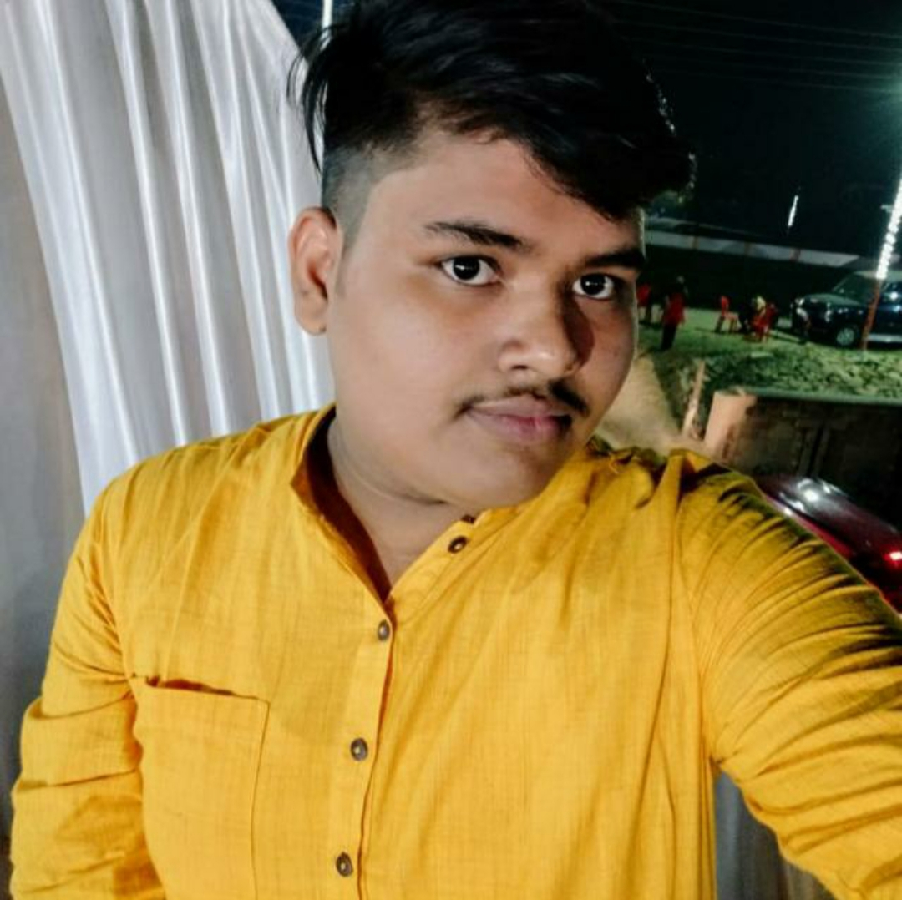
Firstly Thank you for visiting my page.
I haven't done anything great in my life till now but I have plans to do something so that after me people remember me by my work.
And for that I'm Constantly working on myself. I belong to Raebareli a small town near Lucknow.
I have done my schoolong from S.J.S. Public School Raebareli.
My academics were always good but I was far away from co-curricular activities like sports because of my obese body and for which I'm
currently trying my level best to be in shape so that I should become more Confident.
My short term goal is to complete my graduation and be a successful Engineer and my long term goal is to own a Multi National Company
and make me and my parents proud. Currently I'm in first year of B-tech in Electrical Engineering from Dayanand Sagar College of Engineering,Banglore.
Anyone wants to know something about Engineering or having any academic problem in their 10+2 may directly contact me through my Instagram handle.
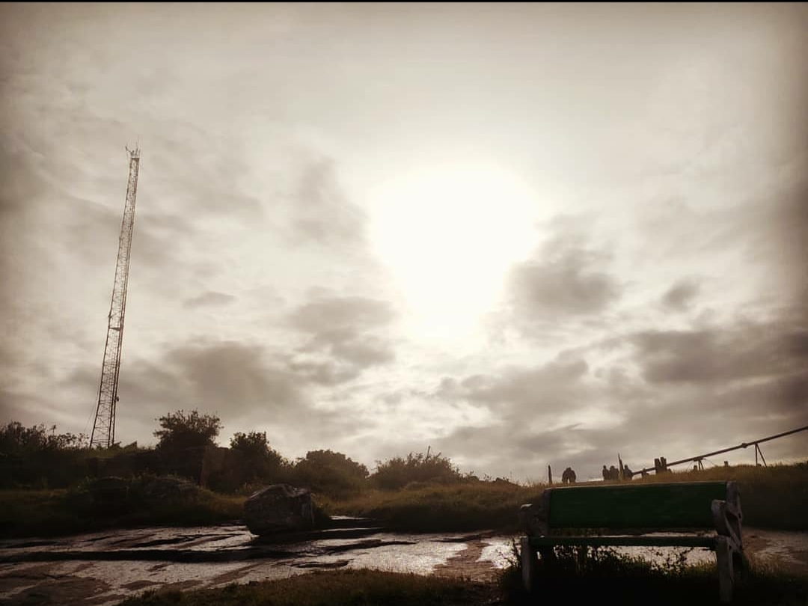 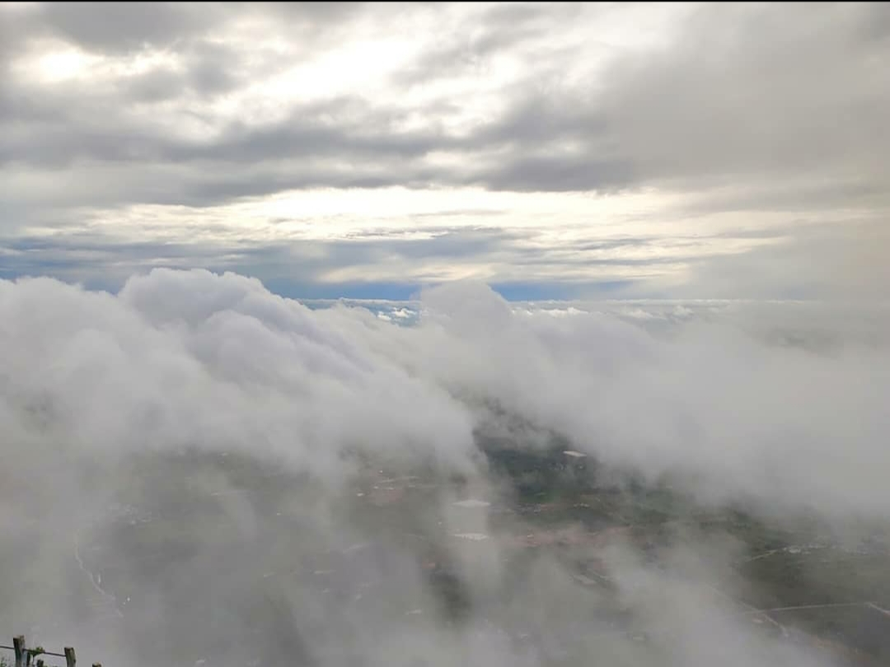 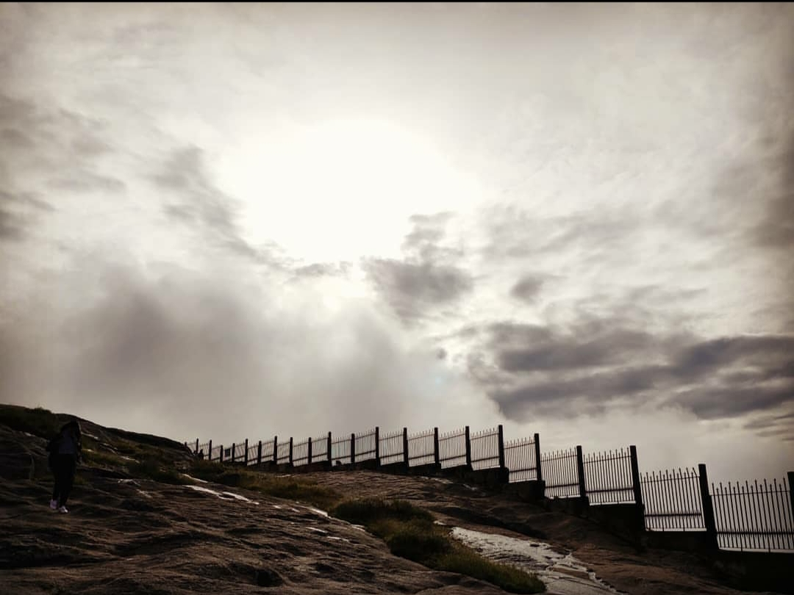 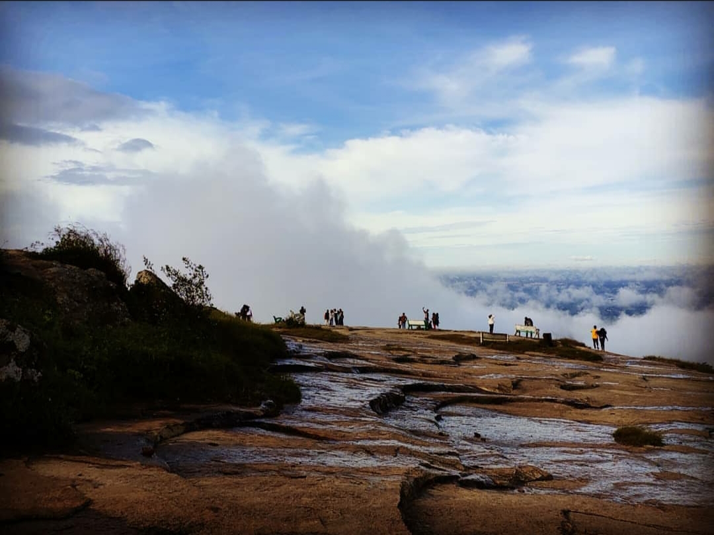 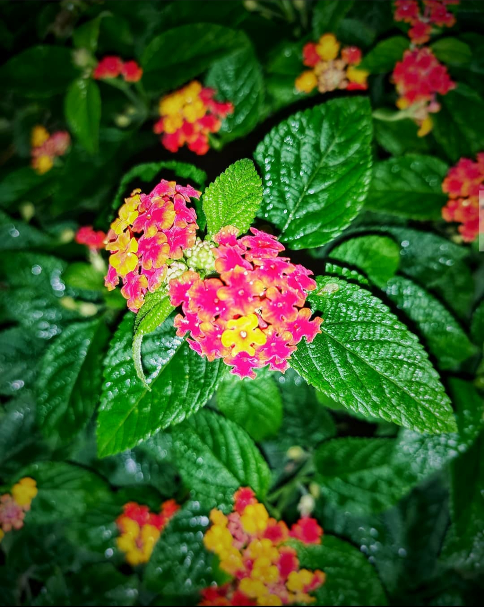 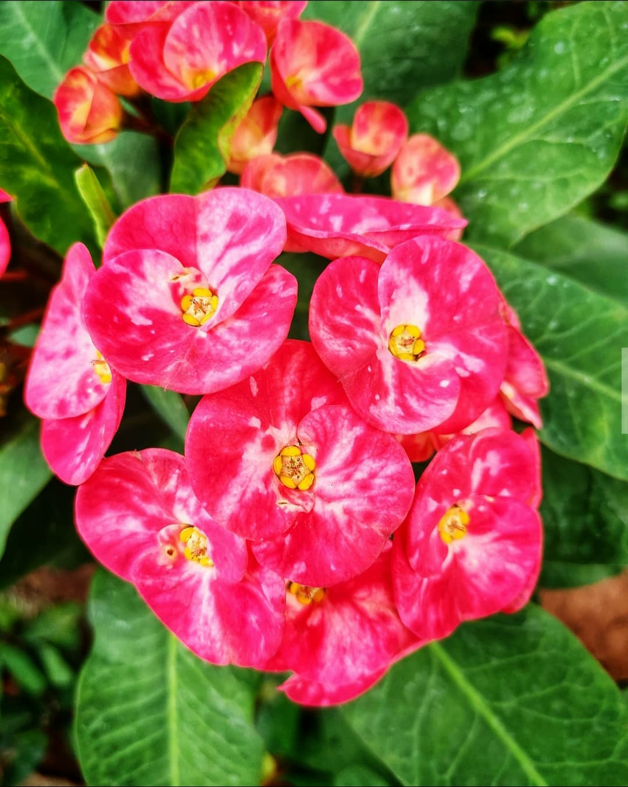 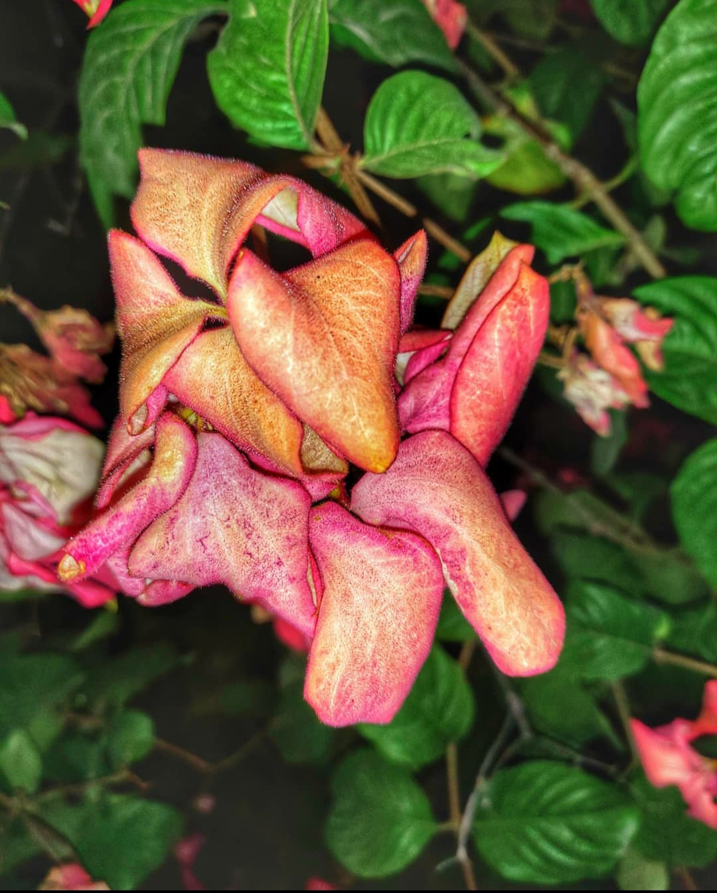 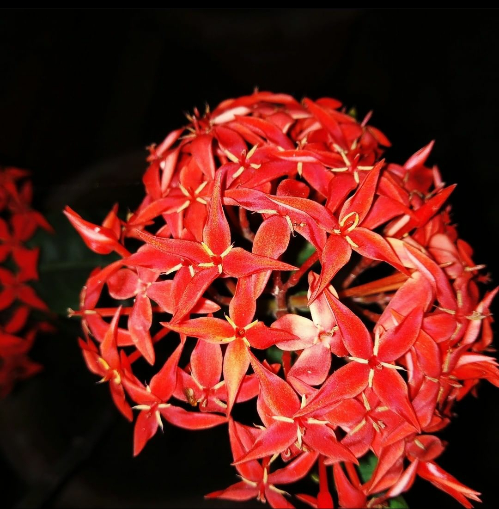 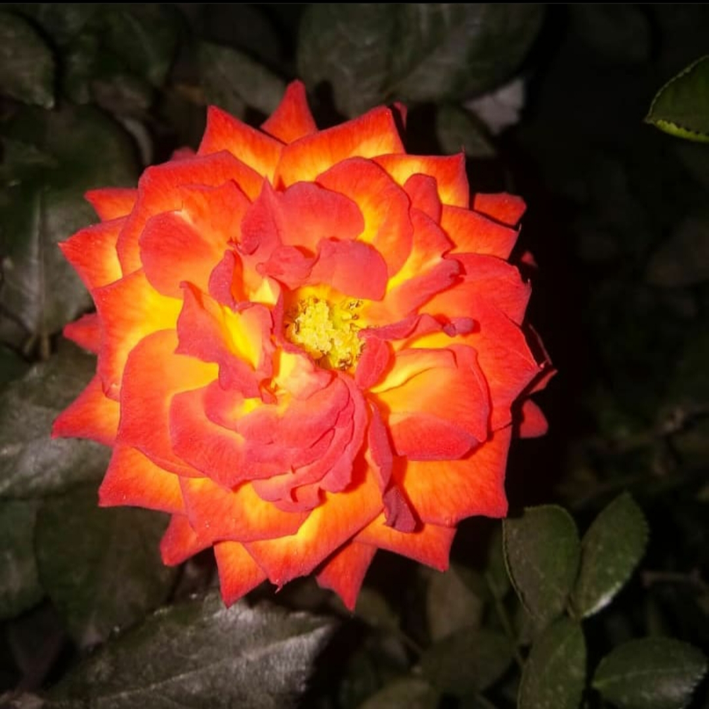 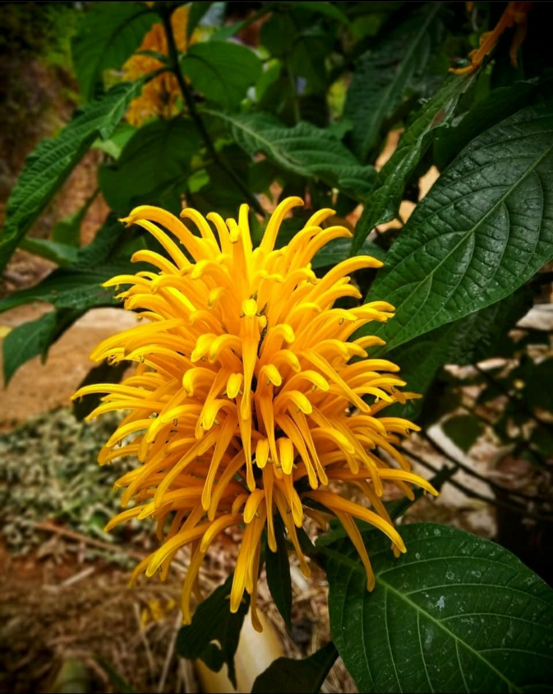 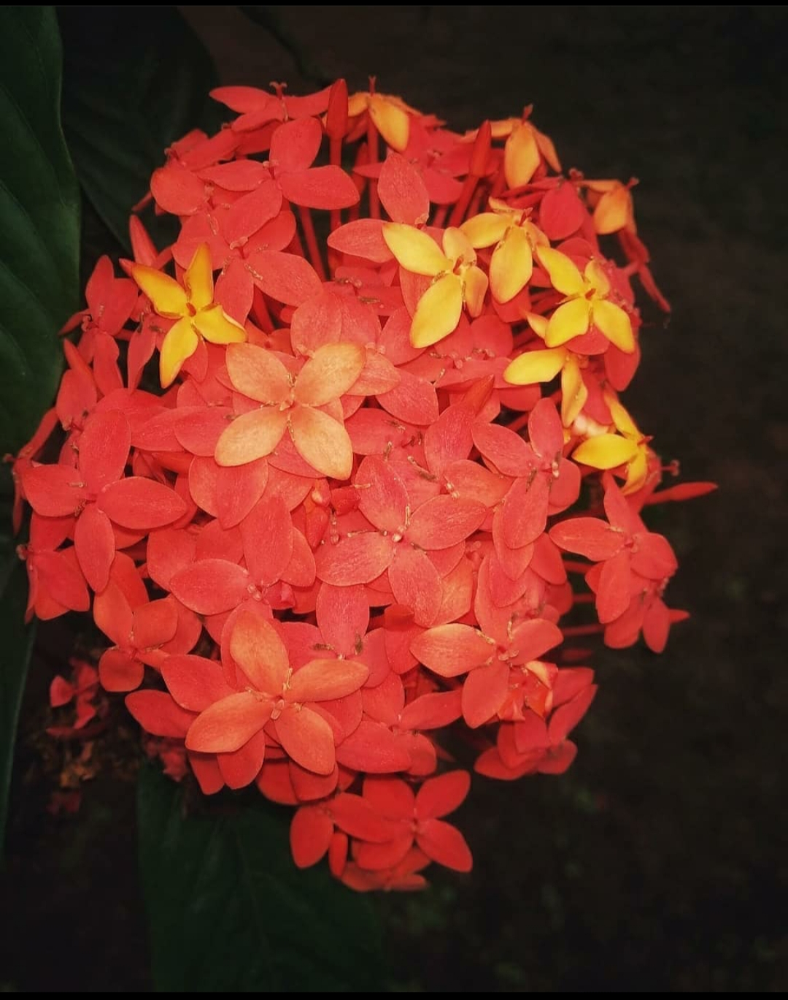
I have many CRUSH(tends to infinity...) but secretely I am in love with KHASTA and CHILLY POTATO.